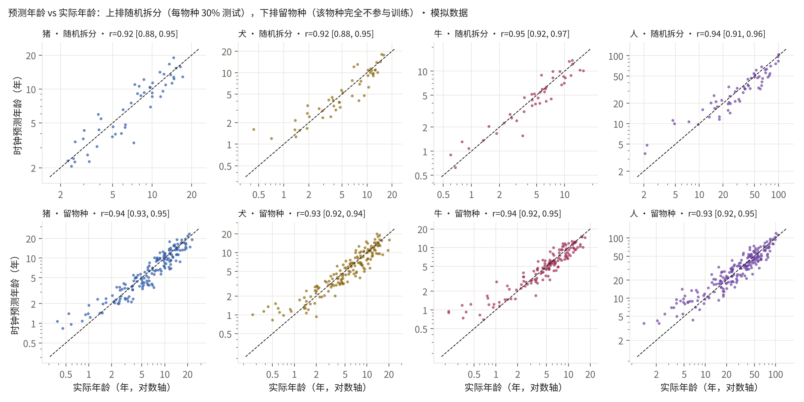
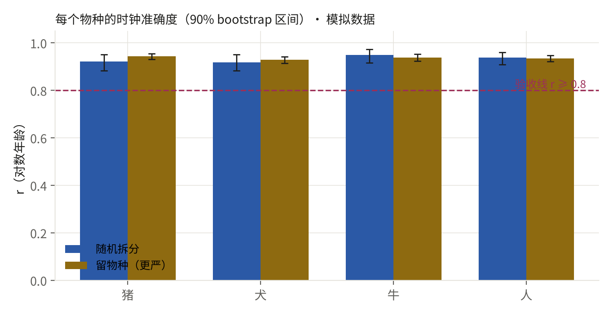
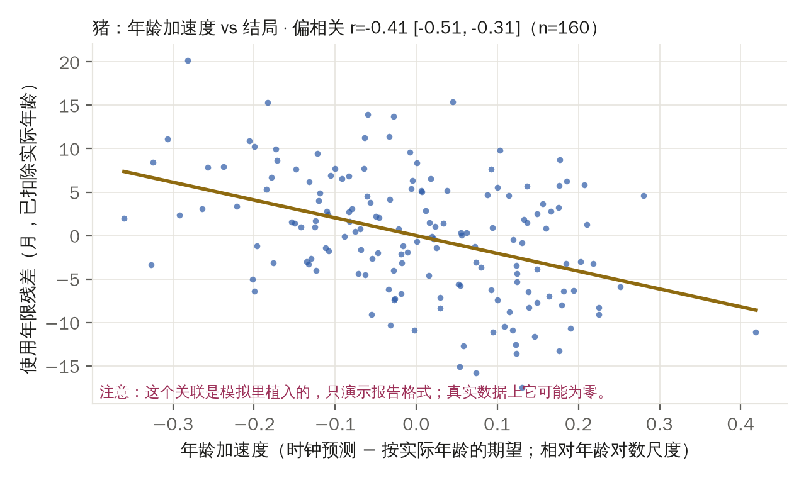
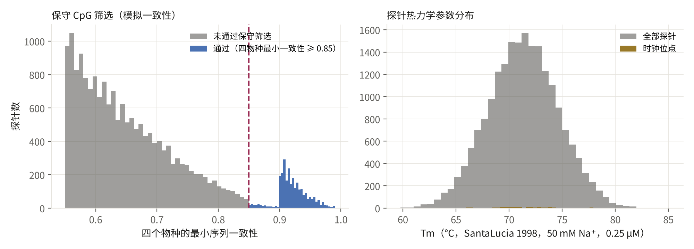

对照 PRD v3 §3 Demo 2 与 P-D2v3。它要证明 Deck 上的一句话：同一套读出与裁判，在育种之外的第二个领域零改动可用——生物年龄可以被跨物种一致地读出。
真实 GEO 数据尚未到位（docs/NEXT.md §2），本页用明示参数的模拟器把整条流水线跑通。生成时间 2026-09-28 09:17 UTC，种子 2，模拟配置哈希 e0f028db15c7，时长 72 秒。
读出（甲基化阵列）→ QC → 保守 CpG 筛选（各物种序列一致性）→ 弹性网时钟（目标为相对年龄的对数）→ 随机拆分与留物种验证 → 年龄加速度与结局 → 探针清单。每一步的"本版本 / 真实版本 / 状态"：
| 模块 | 本版本用什么 | 真实版本用什么 | 状态 |
|---|---|---|---|
| 读出面板 | 模拟阵列 20,000 探针，血液单一组织，每物种 2 个批次 | 国产跨物种甲基化芯片（保守 CpG 面板）；GEO 泛哺乳动物阵列数据先行 | 模拟 |
| QC | 检出率与批次记录（模拟数据无缺失） | 检出 p 值、性别校验、批次校正（ComBat 类）、细胞组成估计 | 待真实数据 |
| 保守 CpG 筛选 | 四物种最小序列一致性 ≥ 0.85（模拟一致性） | 探针序列对各物种基因组比对（minimap2 / BLAST），同阈值 | 算法同，数据待接 |
| 时钟模型 | 弹性网（l1_ratio 0.5，5 折 CV 选 α），目标 = 相对年龄的对数 | 同（Zou & Hastie 2005；Lu et al. 2023 的相对年龄变换） | 已实现 |
| 验证 | 每物种 70/30 随机拆分 + 留物种（LOSO），90% bootstrap 区间 | 同；验收线留物种 r ≥ 0.8（猪或犬），不为过线调参 | 已实现 |
| 年龄加速度 → 结局 | 猪的模拟'使用年限'标签（关联为植入，斜率 -18.0 月/单位 δ） | 客户台账里的淘汰 / 生产寿命记录；犬猫的干预终点 | 只演示格式 |
| 探针清单 | top5k / top20k：时钟系数、各物种一致性、SantaLucia 1998 ΔH/ΔS/Tm | 同；序列来自真实设计，热力学按拉索工艺条件重算 | 算法同，序列为随机 |


| 物种 | 样本数 | 最大寿命（年，假设） | 随机拆分 r | 随机拆分 90% 区间 | 留物种 r | 留物种 90% 区间 | 留物种中位绝对误差（年） | 留物种是否 ≥ 0.8 |
|---|---|---|---|---|---|---|---|---|
| 猪 | 160 | 27.000 | 0.921 | [0.88, 0.95] | 0.943 | [0.93, 0.95] | 1.163 | 是 |
| 犬 | 160 | 24.000 | 0.918 | [0.88, 0.95] | 0.928 | [0.92, 0.94] | 0.889 | 是 |
| 牛 | 140 | 20.000 | 0.949 | [0.92, 0.97] | 0.939 | [0.92, 0.95] | 0.782 | 是 |
| 人 | 200 | 122.500 | 0.939 | [0.91, 0.96] | 0.935 | [0.92, 0.95] | 5.632 | 是 |

排序规则：弹性网系数绝对值 → 是否通过保守筛选 → 最小一致性。每条探针带各物种序列一致性、GC 含量、SantaLucia 1998 最近邻 ΔH / ΔS / Tm（50 mM Na⁺，0.25 µM）。文件：probes_top5k.csv、probes_top20k.csv。前 12 条：
| rank | probe_id | tier | min_identity | Tm_C | clock_coef |
|---|---|---|---|---|---|
| 1 | cg_sim_000283 | 时钟位点（弹性网系数非零） | 0.972 | 74.110 | -0.038 |
| 2 | cg_sim_000145 | 时钟位点（弹性网系数非零） | 0.922 | 71.690 | -0.036 |
| 3 | cg_sim_000220 | 时钟位点（弹性网系数非零） | 0.959 | 69.340 | -0.032 |
| 4 | cg_sim_000266 | 时钟位点（弹性网系数非零） | 0.907 | 69.160 | -0.030 |
| 5 | cg_sim_000143 | 时钟位点（弹性网系数非零） | 0.953 | 66.170 | -0.030 |
| 6 | cg_sim_000151 | 时钟位点（弹性网系数非零） | 0.902 | 77.830 | 0.028 |
| 7 | cg_sim_000093 | 时钟位点（弹性网系数非零） | 0.947 | 65.860 | 0.023 |
| 8 | cg_sim_000231 | 时钟位点（弹性网系数非零） | 0.972 | 72.730 | -0.022 |
| 9 | cg_sim_000164 | 时钟位点（弹性网系数非零） | 0.951 | 70.570 | -0.021 |
| 10 | cg_sim_000042 | 时钟位点（弹性网系数非零） | 0.945 | 71.960 | -0.021 |
| 11 | cg_sim_000225 | 时钟位点（弹性网系数非零） | 0.940 | 68.390 | -0.020 |
| 12 | cg_sim_000049 | 时钟位点（弹性网系数非零） | 0.914 | 74.930 | 0.020 |

bandwidth = samples_per_year / label_latency_years。年龄标签在采样时即可得（延迟 ≈ 0），带宽不受限；结局标签（使用年限、淘汰）平均要等 2.5 年，按每年 20,000 个样本的假设，带宽 = 8,000。两个数都是假设口径。
RUN.json 记录种子、模拟配置哈希、每一步时长、每个物种的 r 与区间、验收结论、带宽与输出文件哈希。